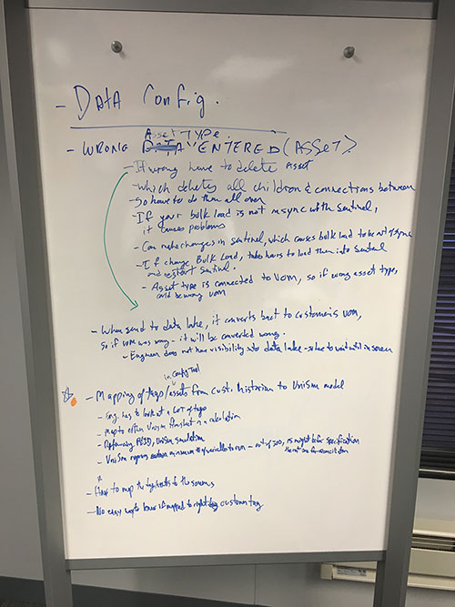
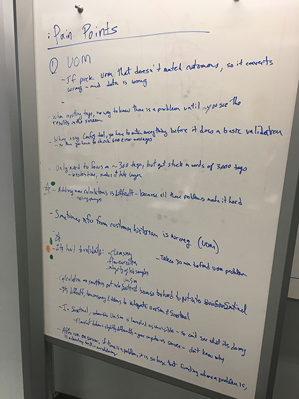
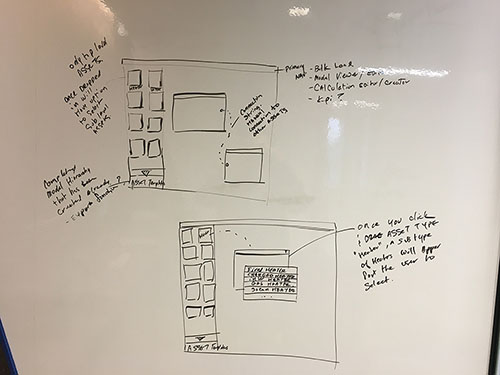
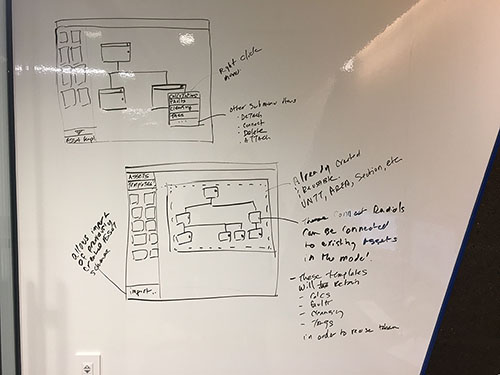
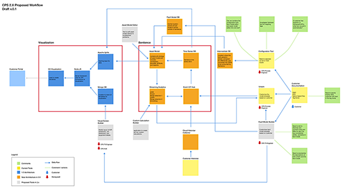
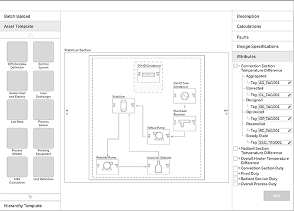
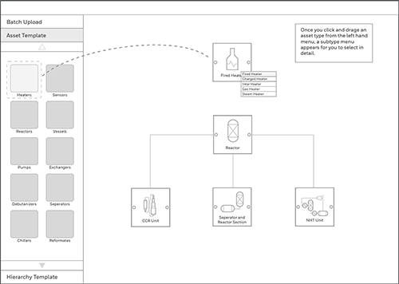
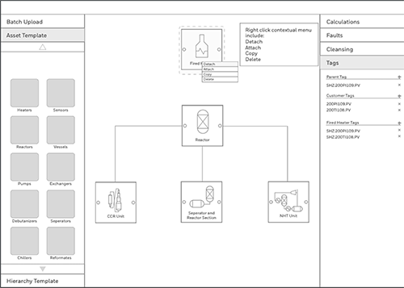

Introduction
Honeywell Asset Model Builder is a cloud native application that lets users see realtime data from plants and factories, to gain insights and what-if analysis to help aid a more profitable management of plant assets.
Company
Honeywell International - (Universal Oil Products)UOP
Project Date
May 2017 - March 2019
Role
Lead UX Designer
Project Summary
CPS (Connected Performance Services) is an application that interfaces with a simulation application called Unisim. The current system's data is isolated to individuals and is very difficult to manage the data and collaborate. Current architecture prohibits real time data, and opts to use bulk upload of relevant data. The interface for the application was mainly in Excel. Onboarding of customer data took over 26 weeks because most of the data had to be adjusted manually for input. The main benefit for end users was a knowledge base of chemial refinement, but was not maintained for the user to drill down.
The Challenge
Several workshops were conducted to get to the bottom of what work needed to be completed, to enhance the user experience. We determined that the users are internal process engineers that needed to onboard customer data into the application as quickly as possible. Secondarily, the process engineer needed to validate his findings by querying the data in real time, to match the data that is coming form the plant. The major problems we needed to solve was discussed:
- How do we reduce the time to onboard the customers, from 26 weeks to 2 weeks
- How can we give access to corrected, accurate data, so that users can work from the same data
- How can we let multiple users collaborate around the world
- How can we leverage years of tribal knowledge from UOP, and help users of the application be more productive
- What additional tools can we provide process engineers, to aid them


The Solution
As a UX designer assigned to this project, I worked with the product owner, development lead, and users to determine the key pain points to solve, and prioritize the stories to be worked on. The features that were to be solved were discussed and prioritized below:
- create an automated method to ingest data in the backend and manipulate the data for consumption
- Create a cloud based architecture so that multiple users will use the data, collaborate with the results at the same time
- Improve the current workflow for the process engineers, from an excel based data entry to a cloud based automated work environment
- Create builder tools, so that onboarding tasks by process engineers can be automated
- Make the knowledge base more robust and editable by key personnel so that detailed chemical process knowledge is available to everyone


The biggest problem we had to solve is how to make a 26 week onboarding process into a 2 week process. After further investigation, on current workflow, process engineers had to search, catalog, and input tags that correspond from the plant into a proprietary tag in Excel sheets. This was an arduous task, which could take a long time. Furthermore, when a raw data comes in from the plant, the data needs to be normalized, calculated, and assessed to see if it can be part of the viable data set. We concluded that this task needs to be automated, so that the process engineers do not have to spend time on this part of the workflow. So the result of onboarding time was reduced by 16 weeks, because of this automation of data.

We also found out that a single process engineer would work on a single project from start to finish. The reason was that the data was sitting on the computer that they were assigned to and not shared with others, who could help with the tasks. We agreed that the data needs to be on the cloud, so that multiple process engineers could work on the same project at one time. What took 1 process engineer 4-6 weeks to validate the data, was reduced to 1-2 weeks, because we had multiple process engineers tackling the project together.
To further aid in validation of uploaded data, we created builder tools to search the massive database of tags that has been uploaded to the cloud. The following tools were created in order to aid process engineers:
- Tag query
- Tag drilldown/exploration
- Tag hierachy(tag lineage)
- Realtime data view(TSDB search)
- Bulk edit of tags




We also determined that the knowledge of chemical process was important to package and include in aiding end users, using our application. We interviewed many chemical engineers and presented them with real scenarios, so that we could include their knowledge in troubleshooting scenarios. The knowledge base is now used to drill down on KPI that are presented on the dashboard application.


Conclusion
As a UX designer assigned to the CPS project, I partipated by working together with the product owner, to generate and prioritize business goals, and features that will advance the application for easier use. I aided the developers by being a member of the scrum team and help them on a daily basis to bring design into developmental completion. We tested and validated our designs and applications with process engineers, so that we can put that knowledge back into our product.